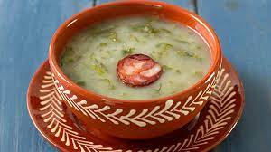

Caldo Verde

Caldo verde the portuguese green soup!
Typical of the North Region of Portugal, this Portuguese broth will be the soup for the end of the day 🙂 What do you think? Try this simple and quick recipe at home. This soup is ready in just 45 minutes.
Ingredients:
- 500g of potatos
- 200g of chopped kale
- 1/2 Chourizo
- 1 Onion
- 2 garlic cloves
- 1 dl of olive oil
- 1 tablespoon of salt
- 2L of water
- Corn bread q.b.
Steps:
- Heat a pan with olive oil, chopped onion and garlic and peeled and cut potatoes. Allow to cool slightly, stirring occasionally.
- Add the water, salt and chorizo and let it cook.
- When the potatoes are cooked, remove the chorizo and mash everything very well. Add the cabbage and bring to a boil.
- Serve the green broth with sliced chorizo, accompanied by slices of cornbread.
return